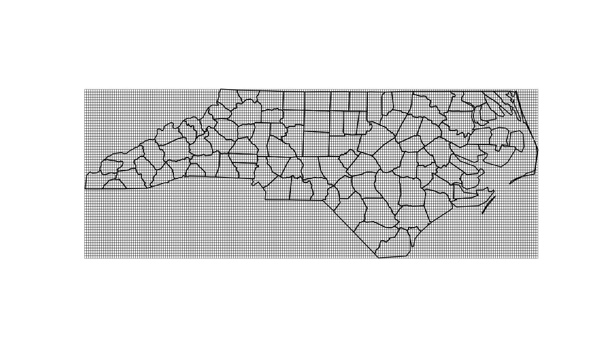

Creates cell geometry from vectors of X and Y positions.
Usage
create_cell_geometry(
X_coords,
Y_coords,
prj,
geom = NULL,
buffer_dist = 0,
regularize = FALSE,
eps = 1e-10
)Arguments
- X_coords
numeric center positions of X axis indices
- Y_coords
numeric center positions of Y axis indices
- prj
character proj4 string for x and y
- geom
sf data.frame with geometry that cell geometry should cover
- buffer_dist
numeric a distance to buffer the cell geometry in units of geom projection
- regularize
boolean if TRUE, grid spacing will be adjusted to be exactly equal. Only applies to 1-d coordinates.
- eps
numeric sets tolerance for grid regularity.
Details
Intersection is performed with cell centers then geometry is constructed. A buffer may be required to fully cover geometry with cells.
Examples
dir <- tempdir()
ncf <- file.path(dir, "metdata.nc")
try(zip::unzip(system.file("extdata/metdata.zip", package = "ncdfgeom"), exdir = dir))
if(file.exists(ncf)) {
nc <- RNetCDF::open.nc(ncf)
ncmeta::nc_vars(nc)
variable_name <- "precipitation_amount"
cv <- ncmeta::nc_coord_var(nc, variable_name)
x <- RNetCDF::var.get.nc(nc, cv$X, unpack = TRUE)
y <- RNetCDF::var.get.nc(nc, cv$Y, unpack = TRUE)
prj <- ncmeta::nc_gm_to_prj(ncmeta::nc_grid_mapping_atts(nc))
geom <- sf::read_sf(system.file("shape/nc.shp", package = "sf"))
geom <- sf::st_transform(geom, 5070)
cell_geometry <- create_cell_geometry(x, y, prj, geom, 0)
plot(sf::st_geometry(cell_geometry), lwd = 0.25)
plot(sf::st_transform(sf::st_geometry(geom), prj), add = TRUE)
}
#> Warning: No variables with a grid mapping found.
#> Defaulting to WGS84 Lon/Lat
